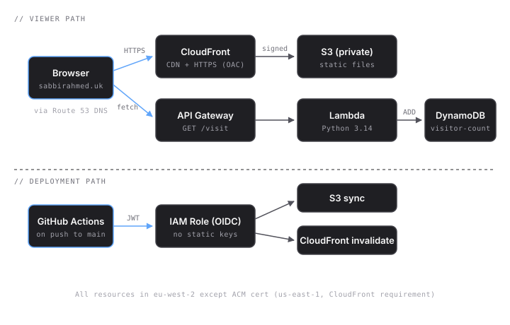

Sponsorship Tracker
UK cloud job hunt, in public.
I'm Sabbir — an international student in the UK looking for a sponsored junior cloud role. This site is a live, transparent record of every application, every certification, every project. Built so other international students can see what's actually working.
Architecture
This site itself is the project. Static assets served from a private S3 bucket via CloudFront (Origin Access Control), with a serverless visitor counter behind API Gateway → Lambda → DynamoDB. Deployments run via GitHub Actions using OIDC federation — no long-lived AWS keys.

Applications
Illustrative placeholder data while I prepare for the real application round. Will be replaced with live entries as I start applying.
| Company | Role | Sponsors | Status |
|---|---|---|---|
| Monzo | Junior Cloud Engineer | Yes | Applied |
| Octopus Energy | Platform Engineer (Junior) | Yes | Phone screen |
| Capgemini | Associate Cloud Consultant | Yes | Applied |
| ARM | Graduate DevOps Engineer | Yes | Rejected |
| Starling Bank | Junior SRE | Yes | Applied |
| AWS UK | Cloud Support Engineer | Yes | Tech interview |
| Deloitte | Cloud Engineering Analyst | Yes | Applied |
| Cloudflare | Solutions Engineer (Grad) | No | Not eligible |
Certifications
- AWS Certified Cloud Practitioner In progress
- AWS Certified Solutions Architect — Associate Planned
- HashiCorp Terraform Associate Planned
Projects
-
Sponsorship Tracker Live
This site. S3 + CloudFront (OAC) + Route 53 + ACM + Lambda + API Gateway + DynamoDB + GitHub Actions (OIDC).
-
Sponsorship API Next
A public API for the UK Sponsor Licence Register — scheduled Lambda ingestion, DynamoDB storage, searchable frontend.
Live Operations
Real-time CloudWatch dashboard tracking request volume, error rates, Lambda duration, DynamoDB capacity, and AWS spend.